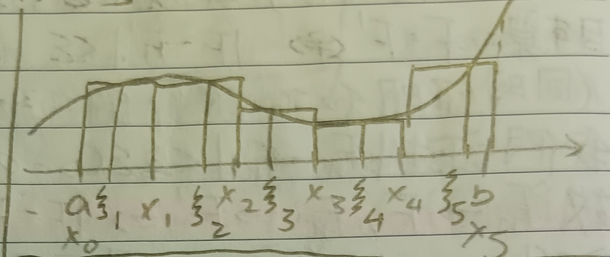
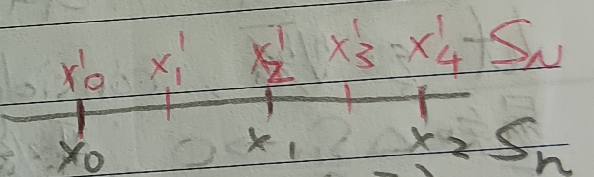
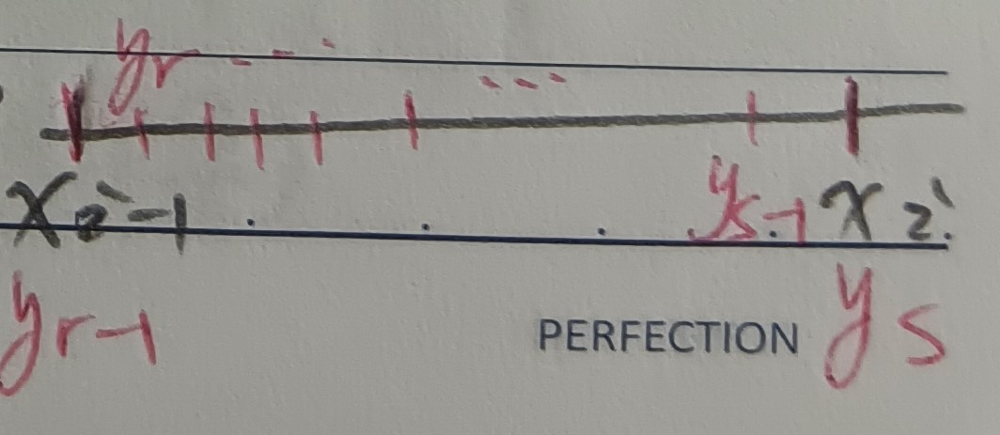
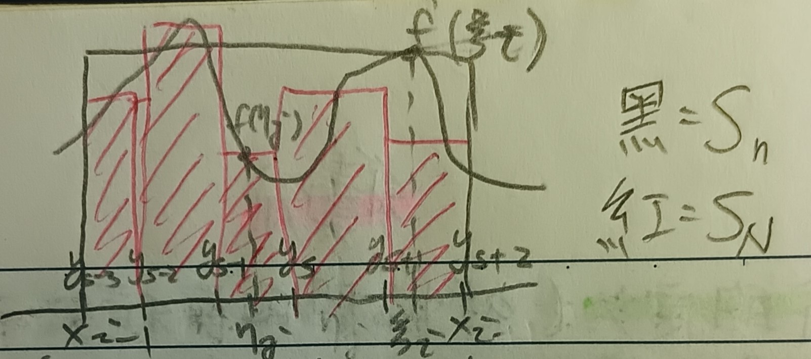
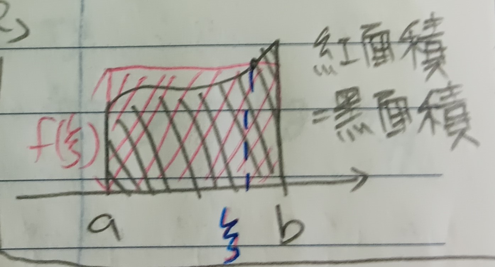

這份筆記是關於黎曼積分的定義與性質。
積分的定義
定義 1：黎曼積分 (Riemann Integral)
定義 1-1：黎曼和 (Riemann Sum)
令\(f(x)\)為在區間\([a,b]\)上的連續函數。將\([a,b]\)分成\(n\)個子區間，其中區間端點為\(a=x_0<x_1<\cdots<x_n=b\)，並令\(\Delta x_i=x_i-x_{i-1}\)。在區間\([x_{i-1},x_i]\)上，任選\(\xi_i\in[x_{i-1},x_i]\)，則我們可以有和 \[ \begin{aligned} F_n&=f(\xi_1)\Delta x_1+f(\xi_2)\Delta x_2+\cdots+f(\xi_n)\Delta x_n\\ &=\sum_{i=1}^n f(\xi_i)\Delta x_i \end{aligned} \] 我們將上述的和稱為黎曼和(見下圖1)。
定義 1-2：黎曼積分 (Riemann Integral)
在上述定義1-1的黎曼和中，令\(n\to\infty\)且\(\max\limits_{1\leq i\leq n} (\Delta x_i)\to 0\)。若黎曼和在此狀況下極限存在，則稱此極限值為「\(f\)在\([a,b]\)的(黎曼)積分，記做 \[\int_a^b f(x)dx\]

定理 1-3
定義1-2中的極限總是存在，且此極限與\(x_i\)與\(\xi_i\)的選取無關。
證明：底下分兩步驟證明。
1.
我們希望說明極限存在。在此之前我們定義一件事：
定義 1-3-1：精化 (Refinement)
給定兩個\([a,b]\)的分割\(S_n\)和\(S_N\)(我們用子區間端點的點集來描述區間的分割，故\(S_n\)和\(S_N\)是兩個點集。)若\(S_m\subseteq S_N\)，則稱\(S_N\)是\(S_n\)的精化(見下圖3)。
今給定\([a,b]\)上的兩個分割\(S_n=\{x_i\}_{i=0}^n\)和\(S_N=\{y_j\}_{j=0}^N\)，其中\(S_N\)是\(S_n\)的精化。又我們知道由於\(f\)在\([a,b]\)上連續，故\(f\)在\([a,b]\)上一致連續(見這裡的定理4)。故\(\forall\epsilon>0\), \(\exists\delta>0\) s.t. 當\(|x-y|<\delta\)時，總是有\(|f(x)-f(y)|<\epsilon\)(☆)。考慮點\(\xi_i\in[x_{i-1},x_i]\), \(\eta_j\in[y_{j-1},y_j]\)，有 \[F_n=\sum_{i=1}^n f(\xi_i)\Delta x_i\] \[F_N=\sum_{j=1}^N f(\eta_j)\Delta y_j\] 又\(\Delta x_i=x_i-x_{i-1}\)，但由\(S_N\)是\(S_n\)的精化知存在\(r,s\)使得\(x_i=y_s\), \(x_{i-1}=y_{r-1}\)，故 \[ \begin{aligned} \Delta x_i&=y_s-y_{r-1}\\ &=(y_s-y_{s-1})+(y_{s-1}-y_{s-2})+\cdots+(y_r-y_{r-1}) \end{aligned} \] 見下圖4。
對於某個\(\Delta y_j\)而言，其會對應到一個\(\eta_j\)，而\(\Delta y_j\)又會完全落在某個\(\Delta x_i\)裡面，而該\(\Delta x_i\)又會對應到其上的\(\xi_i\)。於是，我們可以有 \[|F_N-F_n|=\left|\sum_{i=1, \Delta y_j\subseteq\Delta x_i}^n (f(\xi_i)-f(\eta_j))\Delta y_j\right|\] 見下圖5。
又令\(\max\limits_{1\leq i\leq n}(\Delta
x_i)<\delta\) ((☆)處的\(\delta\))，則由一致連續的假設有\(f(\xi_i)-f(\eta_j)<\epsilon\)，且有\(\Delta y_j<b-a\)，故對於所有\(S_n\)的精化\(S_N\)，會有\(|F_n-F_N|<\epsilon(b-a)\)。
而由黎曼積分的定義知\(\Delta S_n\to
0\)(在此記\(\Delta
S_n=\max\limits_{1\leq i\leq n}(\Delta x_i)\))，故必存在\(N\)使得當\(n,m>N\)時，\(\Delta S_n,\Delta
S_m<\delta\)。定義\(S_{n+m}=S_n\cup
S_m\)，則\(S_{n+m}\)是\(S_n\)和\(S_m\)的精化。故 \[|F_n-F_m|\leq|F_n-F_{n+m}|+|F_{n+m}-F_n|\leq
2\epsilon(b-a)\] 而\(2\epsilon(b-a)\)可以任意小，故\(\{F_n\}\)是柯西序列，故其收斂，即黎曼積分(極限值)存在。令此極限值為\(F\)。
2. 我們希望說明極限值與\(x_i\)及\(\xi_i\)的選取無關。給定另一個\(S_{n'}\)，\(\Delta
S_{n'}<\delta\)，其會對應到一個\(F_{n'}\)，且由上一步知會收斂到極限\(F_{n'}\to F'\)。我們希望說明\(F=F'\)，即\(\forall \epsilon>0\)有\(|F-F'|<\epsilon\)。(此即同時證明極限值和\(x_i\)及\(\xi_i\)的選取都無關。)
我們在上一部中證過當\(n,n'\)夠大時總有\(|F_n-F_{n'}|<2\epsilon(b-a)\)。故當\(F_n\to F\), \(F_{n'}\to F'\)時，也會有\(|F-F'|<2\epsilon(b-a)\)。在此讓\(2\epsilon(b-a)\)任意小，故有\(F=F'\)。QED
例 1-4
考慮常數函數\(f(x)=c\)，我們想求其在\([a,b]\)上的積分。即 \[\textcolor{blue}{\sum_{i=1}^n} \textcolor{red}{f(\xi_i)}\textcolor{blue}{\Delta x_i}=\textcolor{red}{c}\textcolor{blue}{\sum_{i=1}^n\Delta x_i}=\textcolor{red}{c}\textcolor{blue}{(b-a)}\]
例 1-5
考慮函數\(f(x)=x^\alpha\)，其中\(\alpha\)為整數且\(\alpha\neq-1\)。令\(q=\sqrt[n]{\frac{b}{a}}\)。令\(S_n=\{a,aq,aq^2,\cdots,aq^n\}\)。易知\(\Delta S_n\to 0\)。取\(\xi_i\)為\(\Delta x_i\)的右端點。則有 \[ \begin{aligned} F_n=\sum_i(\xi_i)^\alpha\Delta x_i&=\sum_i(aq^i)^\alpha aq^i\times\frac{q-1}{q}\\ &=a^{\alpha+1}\frac{q-1}{q}\sum_i(q^{1+\alpha})^i\\ &=a^{\alpha+1}\times\frac{q-1}{q}\times\frac{q^{1+\alpha}(q^{n(1+\alpha)}-1)}{q^{1+\alpha}-1}\\ &=a^{\alpha+1}\times q^\alpha\times\frac{(q^{n(1+\alpha)}-1)(q-1)}{q^{1+\alpha}-1}\\ &=(a^{1+\alpha}\times q^{n(\alpha+1)}-a^{\alpha+1})\times\frac{q^\alpha(q-1)}{q^{1+\alpha}-1}\\ &=(b^{\alpha+1}-a^{\alpha+1})\times q^\alpha\times\frac{q-1}{q^{1+\alpha}-1} \end{aligned} \] 當\(n\to\infty\)時，\(q=\sqrt[n]{\frac{b}{a}}\to 1\)，有 \[ \frac{q-1}{q^{1+\alpha}-1}=\frac{1}{q^\alpha+q^{\alpha-1}+q^{\alpha-2}+\cdots+1}\to\frac{1}{1+\alpha} \] 故有 \[ F_n\to\frac{1}{1+\alpha}(b^{\alpha+1}-a^{\alpha+1}) \] 即 \[ \int_a^b x^\alpha dx=\frac{1}{1+\alpha}(b^{\alpha+1}-a^{\alpha+1}) \]
積分的基本性質
定理 2
給定在區間\([a,b]\)上連續的函數\(f(x)\)及\(g(x)\)，其積分有以下性質：
1. 對於\(a<c<b\)，有\(\int_a^b f=\int_a^c f+\int_c^b\)
2.
\(\int_a^b (f+g)=\int_a^b f+\int_a^b
g\)
3. 對於常數\(\alpha\)，有\(\int_a^b\alpha f(x)dx=\alpha\int_a^b
f(x)dx\)
4-1. 若在\([a,b]\)上有\(f(x)\geq 0\)，則\(\int_a^b f(x)dx\geq 0\)
4-2. 若在\([a,b]\)上有\(f(x)\geq g(x)\)，則\(\int_a^b f(x)dx\geq\int_a^b g(x)dx\)
以上性質皆由定義可證，在此證略。
註記 2-1
若在\(a>b\)時定義\(\int_a^b f=-\int_b^a f\)，則定理2-1可以擴展到所有\(c\)上。
定理 3：積分均值定理 (Mean Value Theorem of Integral)
在\([a,b]\)上，存在\(\xi\in[a,b]\) s.t. \(\frac{1}{b-a}\int_a^b f(x)dx=f(\xi)\)(見下圖6)。
證明：令\(m\)為\(f\)在\([a,b]\)上的極小值，\(M\)為\(f\)在\([a,b]\)上的極大值。故對於所有\(x\in[a,b]\)，有\(m\leq f(x)\leq M\)。而由定義知 \[ \begin{aligned} &m(b-a)\leq\int_a^b f(x)dx\leq M(b-a)\\ \Rightarrow&m\leq\frac{1}{b-a}\int_a^b f(x)dx\leq M \end{aligned} \] 由中間值定理(這裡的定理5)知有\(\xi\in[a,b]\) s.t. \(f(\xi)=\frac{1}{b-a}\int_a^b f(x)dx\)。QED
定理 4：廣義積分均值定理 (Generalized Mean Value Theorem of Integral)
給定函數\(p(x)\)使得對於所有\(x\in[a,b]\)都有\(p(x)\geq 0\)。則存在\(\xi\in[a,b]\) s.t. \[
f(\xi)=\frac{\int_a^b p(x)f(x)dx}{\int_a^b p(x)dx}
\] (即類似加權平均的概念)
證明：同定理3，有\(m\leq f(x)\leq M\)，則\(mp(x)\leq p(x)f(x)\leq Mp(x)\)，故有 \[ \begin{aligned} &m\int_a^b p(x)dx\leq \int_a^b p(x)f(x)dx\leq M\int_a^b p(x)dx\\ \Rightarrow&m\leq\frac{\int_a^b p(x)f(x)dx}{\int_a^b p(x)dx}\leq M \end{aligned} \] 由中間值定理知存在\(\xi\in[a,b]\) s.t. \(f(\xi)=\frac{\int_a^b p(x)f(x)dx}{\int_a^b p(x)dx}\)。QED
不定積分
定義 5：不定積分 (Indefinite Integral)
給定在\([a,b]\)上連續的函數\(f(x)\)，則定義 \[ \phi(x)=\int_a^x f(t)dt, x\in[a,b] \] 是\(f\)的不定積分。
註記 5-1
函數\(f(x)\)的不定積分是\(x\)的函數。
引理 6
令\(\phi\)是連續函數\(f\)在\([a,b]\)上的不定積分，則\(\phi\)在\([a,b]\)上連續。
證明：由定義\(\phi(x)=\int_a^x f(t)dt\)，有 \[ \begin{aligned} |\phi(x)-\phi(y)|&=\left|\int_x^y f(t)dt\right|\\ &=|f(\xi)(y-x)|\mbox{ (積分均值定理(定理3))}\\ &\leq |f(\xi)||y-x| \end{aligned} \] 對於某個\(\xi\in[x,y]\)。由於\(f\)連續，故當\(y\to x\)時，有\(f(\xi)\to f(x)\)。故當\(x\to y\)時，有\(|\phi(x)-\phi(y)|\to 0\)。可知\(\phi\)在\([a,b]\)上連續。QED